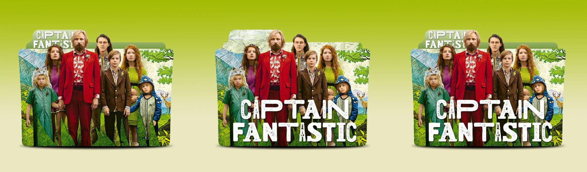

El cine va a clase
Se visualizará la película Captain Fantastic y habrá que contestar en papel de folio una serie de preguntas en el aula relacionadas con la película, al finalizar se entrega la tarea al profesory se envía por Teams una foto.

Tarea: Análisis de la película "Captain Fantastic"
Responder las siguientes preguntas:
1. ¿Vivirías durante un mes como la familia protagonista? ¿Por qué?
2. ¿Qué personaje te gustó más? ¿Y menos? ¿Por qué?
3. Que crees que opina el padre de la familia protagonista sobre estos conceptos: poder, ley, justicia, soberanía.
4. ¿Cuáles creen que son los temas principales que se tratan en la película? ¿Cómo se presentan estos temas y qué mensaje crees que se intenta transmitir?
5. La familia lleva un estilo de vida poco convencional. Describe su estilo de vida con las ventajas y desventajas que tiene. ¿Qué opinas sobre la forma en que el padre educa a su familia?
6. ¿Qué sistema político critican en varias ocasiones durante la película? ¿Por qué?
7. Realiza una valoración personal sobre la película (no se trata de puntuarla).
Rúbrica que voy a utilizar para calificar la tarea:
| CRITERIOS | INSUFICIENTE | SUFICIENTE | BIEN | NOTABLE | SOBRESALIENTE |
| 1. Comprensión de la película y de sus temas principales (preguntas 4 y 6) | No identifica correctamente los temas principales ni la crítica política; presenta confusión | Identifica algunos temas de forma simple y reconoce de manera básica la crítica política. | Identifica adecuadamente los temas y explica la crítica al sistema político. | Analiza los temas y la crítica política con ejemplos concretos de la película. | Analiza en profundidad los temas, la crítica política y el mensaje global de la película. |
| 2. Análisis de valores cívicos, poder y educación (preguntas 3 y 5) | No analiza los conceptos de poder, ley, justicia o educación; respuestas incorrectas. | Describe de forma sencilla la opinión del padre y el estilo de vida familiar. | Analiza correctamente la visión del padre y el modelo educativo. | Relaciona los conceptos con valores cívicos y reflexiona sobre ventajas y desventajas. | Realiza un análisis profundo y crítico relacionándolo con la sociedad actual. |
| 3. Pensamiento crítico y opinión razonada (preguntas 1 y 2) | No expresa una opinión personal clara o no la justifica. | Expresa una opinión sencilla con escasa justificación. | Da una opinión razonada y coherente sobre la familia y los personajes. | Argumenta de forma crítica usando ejemplos de la película. | Muestra una reflexión madura, crítica y bien argumentada. |
| 4. Valoración personal y expresión escrita (pregunta 7) | Valoración inexistente o muy pobre; numerosos errores de expresión. | Valoración simple con errores de expresión o escasa profundidad | Valoración clara y comprensible con expresión adecuada. | Valoración reflexiva, bien estructurada y correctamente escrita. | Valoración profunda, muy bien expresada y con vocabulario preciso. |